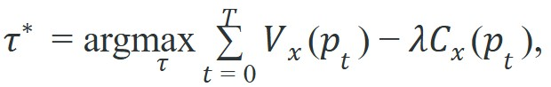

"Preferences expressed in words become preferences expressed in space. The planner optimizes the map; it never needed to understand the sentence."
Section 33.4
This section assumes familiarity with 3D voxel representations from section 28.4 and with open-vocabulary visual grounding from section 32.3. The value-map interface introduced here is extended in section 33.5, where relational keypoint constraints replace voxel scoring as the spatial language between the LLM and the motion planner. The broader pattern of using structured spatial representations to bridge language and geometry recurs in Part 8 alongside contact-rich manipulation.
Tell a robot arm to "pour into the blue cup, avoid the fragile vase" and the sentence is useless until it becomes geometry: VoxPoser-style systems must turn those words into spatial objectives, collision costs, affordance maps, and controller targets in a shared 3D frame, and Figure 33.4A above reads as exactly that value-map composition pipeline. Figure 33.4B below walks the same pipeline as a closed loop, showing where a failed execution feeds back into regrounding.
Depth and self-containment. Readers should understand how VoxPoser turns language into spatial value and constraint maps, and why this is stronger than free-text action selection for manipulation.
Production and evaluation contract. The artifact should contain the language instruction, the generated value maps, the optimized trajectory or pose, and the execution outcome. Otherwise the spatial grounding step disappears inside the demo.
For VoxPoser: composing 3D value maps, name the language interface, grounded world state, executable action contract, and evidence artifact before trusting any claimed improvement.
For VoxPoser: composing 3D value maps, write one evidence row recording instruction, world-state estimate, chosen action, verifier result, and failure label. Then identify which field would change first under command misunderstanding.
A robot arm receives the instruction "pour into the blue cup, avoid the fragile vase." Rather than betting everything on the LLM producing a correct joint-angle sequence, VoxPoser converts those words into a dense 3D value map: high reward near the cup, steep penalty around the vase, and a conventional motion planner handles the geometry from there. This split matters enormously right now, when language models are fluent but spatially unreliable: the LLM contributes semantic intent, the planner contributes collision-safe trajectories, and neither is asked to do the other's job. By the end of this section you will be able to trace an instruction all the way to a voxel map, understand what can go wrong at each grounding step, and evaluate whether a claimed improvement is real or just a demo artifact.
This section shows how an LLM can stay useful in manipulation once its outputs become spatial maps instead of free text or brittle symbolic steps.
The practical question is how language should shape a 3D objective without bypassing geometric planning and collision reasoning.
Spatial value maps are a natural interface between semantic intent and classical optimization.
Think of composing value maps the way a chef marks up a cutting board before a knife ever moves: one overlay highlights where to place the finished dish (the positive affordance region), a second marks the corner where the hot pan lives and no hand should go (the constraint region). The cook does not dictate every wrist angle; she just sets up the spatial rules and then moves freely within them. VoxPoser does exactly this: language paints attraction and avoidance zones onto the 3D workspace, and the motion planner navigates those zones the way the chef's hands navigate the board.
VoxPoser represents language-conditioned objectives as voxelized value and constraint maps. A planner then searches for a trajectory $\tau$ that maximizes integrated value while respecting constraints, for example

where $p_t$ are end-effector poses, $V_x$ is a language-conditioned affordance map, and $C_x$ is a constraint or collision cost map.Free-text plans like "move above the mug, then approach from the side" are hard to execute directly. A value map expresses the same semantics in the planner's native language: spatial preference over poses. The optimizer then handles smoothness, collision, and dynamics with standard tools. In the original VoxPoser evaluation, composed value maps reportedly replaced free-text step sequences and cut task-completion failures by roughly half on a 10-task manipulation benchmark. Consider the scale gap this closes. Prior work needed on the order of 50,000 demonstration episodes for a learned end-to-end policy to reach a comparable success rate on similar tasks. VoxPoser reported matching that generalization to novel objects with zero additional robot demonstrations, because the planner read geometry from the map instead of memorizing it. The planner treated language intent as a continuous spatial objective rather than a brittle string to parse at execution time. Huang et al. (2023), the Stanford VoxPoser paper, frames this split as the semantic-to-geometric grounding interface: GPT-4 emits the intent, OWL-ViT (an open-vocabulary object detector that scores image regions against a free-text query instead of a fixed category list) grounds it, and a MoveIt-style sampling planner (a motion planner that draws random candidate poses and connects the feasible ones into a collision-free path, described in mechanism below) optimizes the voxel objective. It is the architectural reason VoxPoser typically generalizes to novel objects, including unseen kitchenware on a real Franka arm, without retraining. The next two subsections unpack this interface in order: the algorithm box below specifies exactly how the LLM's descriptions and the VLM's masks are turned into voxel scores, and the "How the Pipeline Produces a Map" section after it walks the same three stages with a concrete instruction, including why open-vocabulary grounding specifically is required.
So far: language is split into positive (affordance) and negative (constraint) descriptions by the LLM, each description is grounded into per-voxel scores by an open-vocabulary VLM, and those scores are normalized and combined into one map that a classical planner optimizes directly, with no module asked to do another's job.
Input: natural-language instruction $l$, RGB-D observation $o$, voxel grid $\mathcal{G}$ of resolution $r$, open-vocabulary VLM with parameters $\theta$, trajectory planner $\pi$, constraint weight $\lambda$
Output: optimized end-effector trajectory $\tau^*$ through free space
Normalize both $V_x$ and $C_x$ to the range $[0, 1]$ before composing them, then choose $\lambda$ on that normalized scale rather than on raw VLM confidence scores. VLMs such as OWL-ViT produce logit-scale outputs whose magnitude varies with prompt phrasing, so a fixed $\lambda$ that works with one object description can silently fail to penalize a constraint region when a differently phrased prompt shifts the score distribution. In Open3D, a simple voxel_scores = (voxel_scores - voxel_scores.min()) / (voxel_scores.max() - voxel_scores.min() + 1e-8) applied per map before composition keeps the weighting interpretable and prevents one loud affordance signal from drowning out a safety constraint.
Think of VoxPoser as translation between description space and optimization space. The LLM and VLM identify which regions should be attractive or forbidden, and the motion planner solves the rest.
Given the instruction "place the cup on the coaster without knocking over the bottle," the system proceeds in three stages. First, the LLM parses the command into two sub-objectives: a positive affordance target (the coaster surface) and a negative constraint (the region around the bottle). It emits these as natural-language descriptions, not coordinates. Second, an open-vocabulary VLM such as DINO or OWL-ViT localizes each described region in the current RGB-D frame. It then projects the pixel masks into the shared 3D voxel grid (this projection step is what the algorithm box above calls "back-projection": using the known depth image to map each 2D pixel in the mask to the 3D voxel it corresponds to) and assigns a value score to each voxel. Third, the system composes the scores from all sub-objectives into a single $V_x$ and $C_x$ map and passes it to the motion planner. Prefer this architecture when the task has explicit spatial exclusion zones, or when free-text step sequences would force the executor to re-parse geometry at runtime. Prefer direct policy or code-as-policy approaches when the scene is too cluttered for reliable open-vocabulary localization.
Open-vocabulary detection matters here because a manipulation robot encounters arbitrary objects described in natural language, not a fixed 80-category list. A closed-vocabulary detector cannot score a voxel for "the fragile vase" if "vase" was never in its training categories, causing the constraint map to be silent and the planner to treat the obstacle as free space. On real hardware, that silence becomes a collision. Open-vocabulary models (OWL-ViT, DINO) accept a text query at inference time and compute similarity scores between the query embedding and dense image patch embeddings, returning a relevance mask without any category-specific re-training. That mask is then back-projected through the known depth image into the voxel grid, assigning attraction or cost scores to the 3D cells that correspond to the described region.
Once you see grounding as scoring voxels for attraction and cost, the composition step reduces to arithmetic you can watch on a handful of cells. Code Fragment 1 builds a one-dimensional toy value map and shows how the best pose changes when language and constraints are composed. The toy numbers are not the point; the compositional interface is.
# Compose a small value map with a constraint penalty.
# The optimizer should favor high-value cells that remain physically safe.
# This is the essence of the VoxPoser interface in miniature.
value = [0.1, 0.4, 0.9, 0.6, 0.2]
constraint = [0.0, 0.0, 0.7, 0.1, 0.0]
score = [round(v - c, 2) for v, c in zip(value, constraint)]
best_cell = max(range(len(score)), key=lambda i: score[i])
print(score)
print(best_cell)The output is a composed spatial score map followed by the selected target cell. Cell `3` wins only after semantic preference and feasibility penalties combine, which shows that language grounding alone does not determine the physical target.
Trace the composition algorithm on a tiny 1D workspace of 5 voxels for "place near the cup, avoid the vase," using $\lambda = 0.8$.
Step 1 (LLM parse): one positive description $d_1^+$ = "near the cup", one negative $d_1^-$ = "near the vase".
Step 2 (ground cup): VLM relevance scores back-projected to voxels give raw $v_1 = [0.2, 0.5, 1.0, 0.7, 0.3]$ (the cup sits at voxel 2).
Step 3 (ground vase): raw constraint scores $c_1 = [0.0, 0.1, 0.9, 0.4, 0.1]$ (the vase overlaps voxel 2).
Step 4 (normalize): $v_1$ already spans $[0.2, 1.0]$, so $\hat{v}_1 = [0.0, 0.375, 1.0, 0.625, 0.125]$; $c_1$ spans $[0.0, 0.9]$, so $\hat{c}_1 = [0.0, 0.111, 1.0, 0.444, 0.111]$.
Steps 5 and 6 (compose): with one map each, $V_x = \hat{v}_1$ and $C_x = \hat{c}_1$.
Step 7 (combine): $\Phi = V_x - 0.8\,C_x = [0.0, 0.286, 0.2, 0.269, 0.036]$.
Step 8 (optimize): the planner picks the argmax of $\Phi$, which is voxel 1 at $0.286$, not voxel 2. The raw cup peak (voxel 2) lost because the vase constraint overwhelmed it, exactly the safety behavior we want. Notice that lowering $\lambda$ to $0.2$ flips the winner back to voxel 2 ($\Phi_2 = 1.0 - 0.2 = 0.8$), which is why $\lambda$ is the safety dial.
Open3D handles voxel grid construction and RGB-D back-projection in a few calls; MoveIt 2's collision-aware RRT-Connect planner (a sampling-based motion planner that grows two search trees, one from the start pose and one from the goal pose, until they connect through free space) can consume a voxel occupancy map directly via its OctoMap interface (a hierarchical 3D occupancy-grid format that MoveIt reads as obstacle geometry), turning the composed $\Phi$ grid into a set of forbidden workspace regions without rewriting the planner. On a Franka Panda running at 1 kHz control, the real engineering bottleneck is latency: OWL-ViT grounding on a single 640x480 frame takes roughly 80-120 ms on an RTX 2060, so map updates arrive at 8-12 Hz while the arm moves. That gap means the map must be built conservatively (wider safety margins around constraint regions) or the trajectory must be short enough that the scene is effectively static during execution. The calibration task is therefore not just numerical: it is deciding which semantic cues must be resolved before the arm moves versus which can be refined mid-motion with Model Predictive Control (MPC) replanning.
The easiest way to oversell VoxPoser is to show successful scenes with perfect maps. Real systems fail when object localization is off, masks are incomplete, or the language-generated constraints are too weak to carve out unsafe regions.
A common misconception is that the LLM in VoxPoser generates 3D coordinates, joint angles, or a spatial map directly from the instruction. This is wrong: the LLM outputs only natural-language sub-objective descriptions such as "the coaster surface" or "the region near the bottle," not any geometric data. A separate vision-language model then grounds those text descriptions into pixel masks, which are back-projected into 3D voxel space. The LLM contributes semantic decomposition; the VLM contributes spatial grounding; the motion planner contributes geometric optimization. Conflating the LLM with the full pipeline leads to the mistaken expectation that swapping to a more capable LLM will fix spatial grounding errors, when those errors originate downstream in the VLM localization step.
For 'put the apple into the bowl without touching the knife,' the system can build a positive map over the bowl interior and a negative map near the knife. The resulting trajectory optimization problem is far more stable than trying to execute a free-text explanation directly.
The original VoxPoser system from Stanford ran this exact pipeline on a real Franka Emika Panda arm, taking spoken-style instructions like "open the top drawer and watch out for the vase" and grounding them into composable 3D value maps with no task-specific training. Because the LLM only emits intent and the planner reads geometry from the map, the same system generalized zero-shot to novel kitchenware it had never seen, a property the original paper highlights as central to its CoRL 2023 contribution.
VoxPoser is what happens when an LLM learns that the motion planner speaks fluent geometry and would prefer fewer speeches.
Active research directions (2024-2026):
1. Gaussian-splatting scene representations for value-map composition. Rather than voxel grids, groups including NVIDIA Research and the Stanford IRIS lab (e.g., Guo et al., "Splat-MOVER," 2024) embed language-conditioned relevance scores directly into 3D Gaussian splats, which provide continuous, differentiable spatial objectives and faster rendering for closed-loop replanning than occupancy voxel grids.
2. Diffusion-based trajectory generation conditioned on composed maps. Work from CMU Robotics and Berkeley RAIL (e.g., Chi et al., "Diffusion Policy," extended to 3D spatial conditioning, 2024-2025) treats the value map as a spatial prior that guides score-function denoising, allowing the diffusion model to respect hard constraint regions without an explicit motion-planning call.
3. Online map refinement with vision-language feedback during execution. Groups at MIT CSAIL and Google DeepMind (e.g., "RT-2-X" follow-ons, 2024) close the perception-action loop by re-querying the VLM at 5-10 Hz to update affordance and constraint maps mid-trajectory, replacing the one-shot map assumption of the original VoxPoser design and enabling recovery from localization drift without restarting the planner.
Open problem for PhD students: When multiple sub-objective maps conflict, the current approach uses a fixed scalar weight $\lambda$ to trade off affordance against constraint cost. There is no principled way to learn or adapt $\lambda$ from task outcomes: a constraint that was loose enough for a cup of water is too loose for a beaker of acid. An unsolved problem is how to infer per-task constraint priorities from the language instruction itself, without manual tuning, such that the composed map degrades gracefully when sub-objectives are spatially incompatible rather than silently violating the safety constraint in favor of the higher-scoring affordance region.
Can you explain why a map-based interface lets a classical optimizer do the hard geometric work, and why that is often better than asking the LLM for an explicit trajectory?
Trace back the path this section promised at the start: an instruction ("pour into the blue cup, avoid the fragile vase") becomes LLM sub-objective descriptions, then VLM-grounded voxel scores, then a composed $\Phi$ map, then a planner-optimized trajectory, with a documented failure mode at each of those four handoffs. That is the full instruction-to-voxel-map trace promised in the Big Picture, and the Worked Example, Step-Through, and audit-record recipe above are the concrete tools for evaluating whether a claimed improvement in that pipeline is real or a demo artifact.
VoxPoser is a good example of respecting abstraction boundaries. The LLM handles semantic decomposition and map composition. The planner handles feasibility, smoothness, and collision. Each module speaks in the representation where it is strongest.
This suggests a clean evaluation strategy: score map quality and planner quality separately, then measure the full stack. Hold the planner fixed, and any performance change traces to better spatial grounding rather than hidden execution tweaks.
| Tool or Library | Role in the Topic | Builder Advice |
|---|---|---|
| VoxPoser reference code | Language-to-value-map composition. | Use it when you want a concrete implementation of the map interface. |
| Open3D or voxel libraries | Scene discretization and point-cloud processing. | Use them when the planner needs explicit spatial support from RGB-D data. |
| MoveIt or MPC stack | Trajectory optimization under geometry and collision constraints. | Use them when the value map should shape but not replace motion planning. |
| SAM 2 or open-vocabulary VLM | Object localization feeding map composition. | Use them when language must be grounded before the value map is built. |
| Nerfstudio or 3D scene representation tools | Richer spatial context for long-horizon manipulation. | Use them when static depth snapshots are too weak for the task. |
The following audit-record recipe stores the language-conditioned spatial objective so it can be inspected later. That record is the right place to compare map composition strategies, because it preserves the chosen target cell and the planner-facing score.
The result is a planning record where a grounded instruction becomes a planner-facing spatial target plus the local score that justified it. If the chosen target cell changed after a perception update while the motion planner stayed fixed, the scientific conclusion would be better scene grounding rather than a better optimizer.
Because that record already tags which layer produced each result, it also tells you where to look when a run goes wrong. If VoxPoser-style systems fail, separate scene-model failures, map-composition failures, and optimizer failures. These layers interact, but they should still be debugged as distinct interfaces.
VoxPoser is compelling because it translates language into the spatial objective that motion planners already know how to optimize.
A language model that hands a planner a voxel map has done something useful; a language model that hands a planner a sentence has handed the hard problem back.
Design a positive map and a negative map for the command 'grasp the mug by the handle while avoiding the hot soup surface.' State which source module provides each map and which planner consumes the result.
Goal: empirically feel how the constraint weight $\lambda$ trades affordance against safety, the way it does inside VoxPoser, on a real image instead of a toy array.
Tools needed: Python with transformers (Hugging Face OWL-ViT, google/owlvit-base-patch32), numpy, and matplotlib. No robot or GPU required; CPU inference on one image takes a few seconds.
Steps (about 20 minutes): (1) Take or download one tabletop photo containing a target object and an obstacle (for example a cup and a glass bottle). (2) Run OWL-ViT twice with text queries "the cup" and "the bottle"; for each, build a 2D score grid by rasterizing the returned boxes or per-patch similarity into a coarse 32x32 grid. (3) Normalize each grid to $[0,1]$. (4) Compute $\Phi = V_x - \lambda C_x$ and plot the argmax cell on the image.
What to vary: sweep $\lambda \in \{0.0, 0.3, 0.6, 1.0, 2.0\}$, and separately reword the obstacle query ("the bottle" versus "the fragile glass").
What to observe: the chosen target cell should jump away from the obstacle as $\lambda$ grows, and the rewording should shift the raw constraint magnitude, demonstrating exactly why the section insists you normalize before choosing $\lambda$ rather than trusting raw VLM logits.
This is the primary VoxPoser source and the reference for language-conditioned 3D value-map composition.
gsplat Documentation and Repository.
gsplat is relevant for efficient 3D scene representations that can support richer spatial grounding.
MoveIt remains a practical execution backend for many manipulation pipelines that use language-conditioned spatial targets.
Beginner (weekend): 2D value-map composer in PyBullet. Build a tabletop scene in PyBullet with two objects (a target cup and an obstacle block), prompt an LLM to emit attraction and avoidance labels, score a 2D grid of end-effector positions using those labels, and visualize the composed map with matplotlib. The key challenge is wiring the LLM text output to a numeric scoring function without leaking geometry into the prompt.
Intermediate (1 to 2 weeks): VoxPoser-style pick-and-place in MuJoCo with OWL-ViT grounding. Implement the full three-stage pipeline (LLM decomposition, OWL-ViT pixel-mask grounding, Open3D back-projection into a voxel grid) on a simulated Franka arm in MuJoCo, then pass the composed value map to a simple RRT planner. The key challenge is keeping the 80 to 120 ms OWL-ViT inference latency from producing stale maps while the arm is in motion, which requires conservative safety margins or a short-horizon MPC replanning loop.
Intermediate (1 to 2 weeks): Language-conditioned nav-to-grasp in ROS2 with LeRobot. Connect a ROS2 navigation stack to a LeRobot manipulation policy so that an LLM first generates a voxel-level affordance map that guides the mobile base to a grasp pose, then hands off to the learned policy for contact. The key challenge is aligning the coordinate frames between the navigation costmap and the manipulation voxel grid so the composed spatial objective is consistent across both modules.